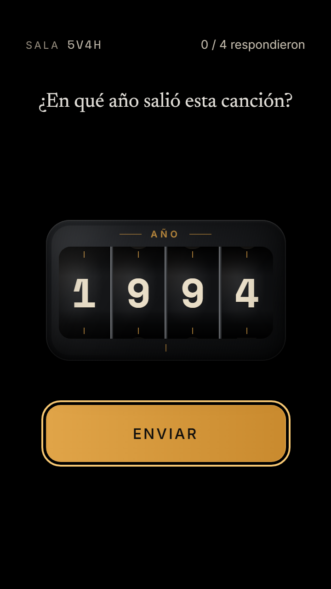
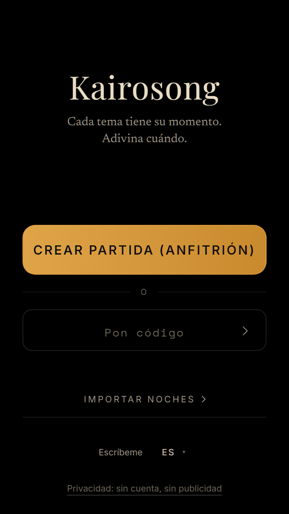
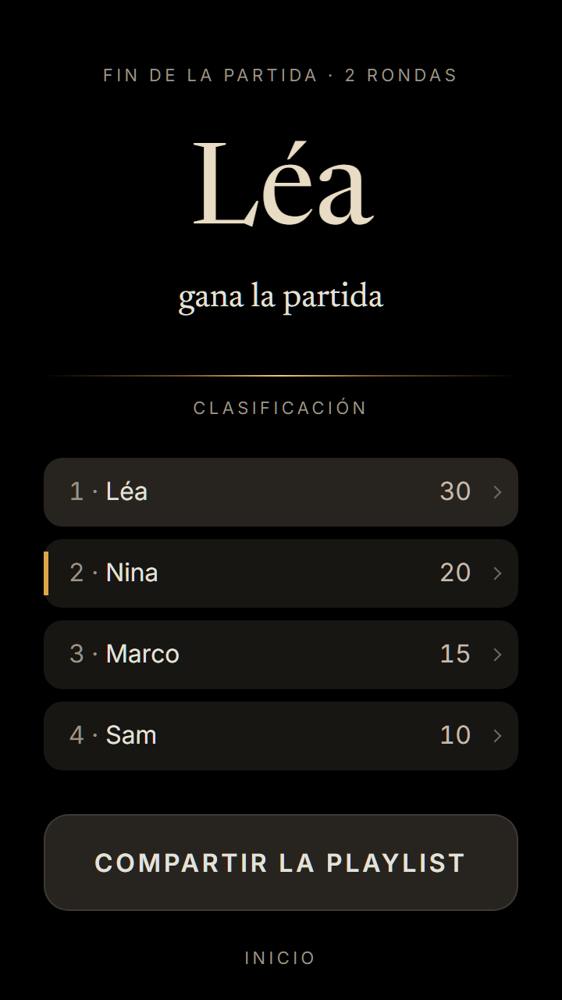

Kairosong
Kairosong
Cada tema tiene su momento.
Adivina cuándo.
El juego de fiesta que escucha tu música. Un quiz musical, un blind test, una noche con amigos — donde la única pregunta es el año.
Gratis. Sin cuenta, nada que instalar.
Cómo funciona
Tres tiempos
Tu música
Suena en tu propio altavoz: una playlist, un vinilo, la radio.
Kairosong escucha
Le bastan unos segundos para reconocer el tema.
Todos adivinan
Cada jugador elige el año en su móvil. Luego llega la respuesta.
Cuando todos han respondido, la distancia muestra el año de cada uno en la misma regla — y luego el anfitrión revela.

Qué necesitas
Algo que suene, y un móvil por persona
Algo que reproduzca música
Un altavoz, un tocadiscos, una radio, una tele… cualquier fuente que se oiga en la sala.
Un móvil por jugador
El anfitrión muestra un código QR, cada uno lo escanea y ya está dentro.
Sin cuenta. Sin tienda de apps. Nada que instalar.
Las reglas
Adivina el año, puntúa la distancia
- El año exacto15pts
- A 2 años10pts
- A 5 años5pts
- A 10 años2pts
La letra pequeña
- Un directo, un remaster, una reedición: misma canción, mismo año. Un Billie Jean en directo de 1988 sigue siendo 1982.
- La versión de otro artista, o un remix: esa versión tiene su propio año.
- Solo cuentan los lanzamientos reales — no la copia promocional enviada a las radios meses antes.
- La revelación siempre dice qué versión sonaba.
- ¿Canción no reconocida? El anfitrión vuelve a escuchar o la salta. Nadie pierde puntos.
Pantallas
De la sala a la última canción

La pantalla de inicio La sala, con su código QR Tras la revelación, la historia detrás de la canción 
El resumen de la noche
La palabra
Kairos — en griego antiguo, el momento justo, el que importa.
Una canción puede guardar uno: un verano, un primer baile, un año que no olvidarás.
Kairosong convierte lo que suena en un juego sobre el tiempo.
Preguntas
Antes de darle al play
¿Kairosong pone la música?
No. Escucha: unos segundos de sonido van al servicio de reconocimiento y luego el fragmento se descarta. La música es tuya, en tu altavoz.
¿Necesito Spotify?
No. Vale cualquier fuente: una app de streaming, un vinilo, un CD, la radio. Si la sala lo oye, Kairosong también.
¿Es gratis?
Sí, del todo. Sin anuncios, sin suscripción, sin cuenta.
¿Funciona en iPhone?
Sí, en Safari — para el anfitrión y para cada jugador. Una excepción: el modo DJ con un solo móvil, que reproduce y escucha en el mismo aparato, necesita Android.
¿Cuántos jugadores?
Tantos móviles como quieras — con 2 funciona, con 10 es una fiesta.
¿Y mis datos?
Sin cuenta ni correo: tu nombre es temporal y desaparece con la partida. Todo lo demás está en la página de privacidad.
Listo cuando lo esté la música.
Jugar